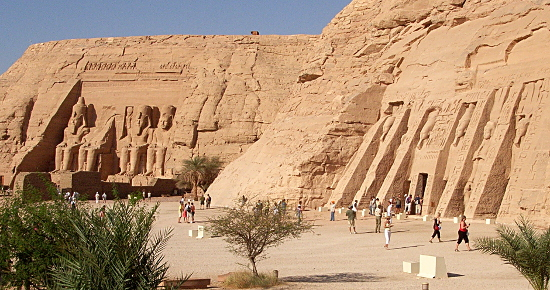
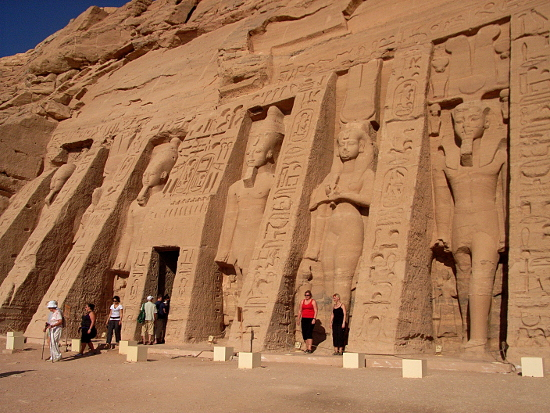
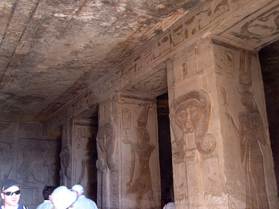

Egypt Trav-E-Log ©
Abu Simbel
15 Nov 2010, Aswan, Egypt
-------------------------------------------
Abu Simbel is located in Nubia, Egypt near the Sudan border on the western bank of Lake Nasser, some 230 km southwest of Aswan. Most travellers take the special tour bus from Aswan to visit the temples.
Construction of the temples was completed in 1265 BCE, but with construction of the Aswan High Dam, the temples would be flooded. From 1964 to 1968 a team working with UNESCO cut up the entire site, moved it 200 meters from the river which added 65 meters in elevation, then reassembled. Another amazing feat 3233 years after initial construction!
-------------------------------------------
Overall view of the temple complex. On the left is the Great Temple dedicted to Ramesses II and the gods Amun, Ra-Horakhty, and Ptah. The Small temple, on the right, was built for Queen Nefertari and the goddess Hathor.
|  |
Closer view of the Small Temple facade.
|  |
Both the Great and the Small Temples are open to tourists. To the right and below are several photos of decorated passageways, ceilings, pillars and other interesting images.
|  |
(Both tripods and flash photography were prohibited, so many photo attempts were unsuccessful. But image to the right had enough available light for a decent photo in the Small Temple.)
|  |
Question? Contact me at the Juno.com address Dancer2SEAsia.
Life is Good When You Travel! Start planning your next trip!